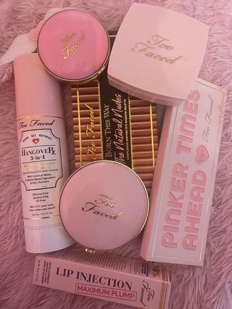
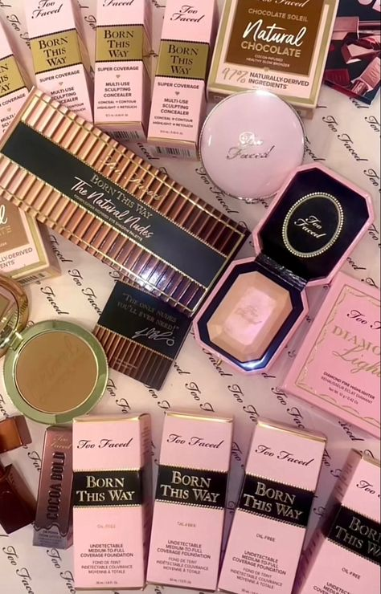

About Too Faced and Products
The company sells a broad variety of cosmetics, such as blushes, bronzers, eyeshadows, lipsticks, mascaras, primers, eyeshadows, and foundations. The eyeshadow palettes from Too Faced are especially well-known for their unique themes and beautifully pigmented colors. Too Faced is well-known for its extraordinary and feminine packaging, which frequently has adorable and vibrant patterns. Numerous items from them are packaged in eye-catching designs and unusual forms.
Too Faced Products
 